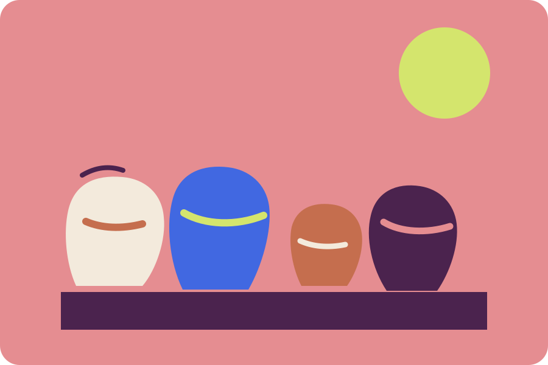

A CERAMICS STUDIO IN LUSAKA · FICTIONAL CONCEPT
Make room
for making.
Clay on your hands. A little curiosity. A thing that didn't exist before you showed up. Come as you are — no experience needed.
Small groups · Tools provided · Beginner-friendly
 SLOW
SLOWOBJECTS
FAST JOY01 / A PLACE TO PLAY
01 / NOT A TEST
There is no
wrong shape.
We believe creativity should feel less like getting it right and more like finding out. Our sessions are guided, unhurried and open to beginners. You choose the idea; we help you get your hands around it.
How we work ↗02 / PICK YOUR PLAY
Something for
every mood.

First spin
A playful wheel introduction. Learn to centre clay and make a small vessel.
From K450 ↗
Shape & story
Pinch, coil and sculpt your way into a one-of-a-kind object.
From K350 ↗Clay together
Make a mess with your favourite people. Birthdays, teams, tiny celebrations.
From K2,800 / group ↗03 / THE GOOD KIND OF MESS
“I came for a cup.
I stayed for the whole afternoon.”
Illustrative customer quote · Fictional
04 / MADE SLOWLY
Clay takes its
own time.
Your piece needs drying, glazing and kiln time after class. We'll tell you what to expect, keep your work labelled and send a collection note when it's ready. The wait is part of the magic.
Studio care & collection ↗YOUR HANDS ARE ALREADY READY
Let's make
a little something.
Pick a session, bring your curiosity, leave with clay stories.
COMMON FORM is a fictional portfolio business. Prices, contacts, policies and customer stories are illustrative; no real booking or payment is made.